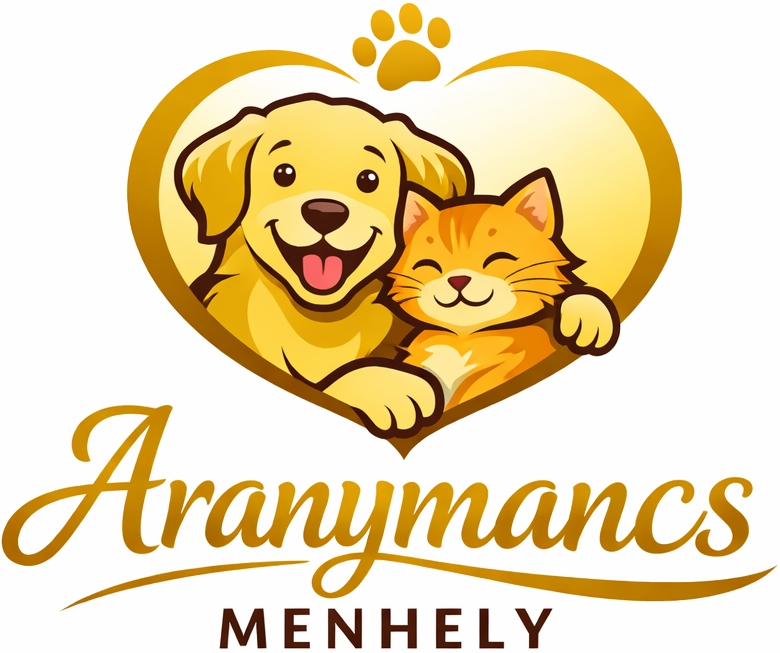

„Nem csak otthont, esélyt adunk egy boldogabb életre”

„Nem csak otthont, esélyt adunk egy boldogabb életre”
Az Aranymancs Menhely egy nonprofit szemléletű, közösségi összefogásra épülő kisállatmentő kezdeményezés. Fő tevékenységünk a bajba jutott kutyák és macskák mentése, ideiglenes gondozása, valamint a felelős örökbefogadás elősegítése.
A mentett kisállatok ellátását elkötelezett önkénteseink végzik, amely magában foglalja az etetést, a higiénikus környezet biztosítását, a rendszeres mozgatást és a szocializációt. Célunk, hogy az állatok fizikailag és lelkileg is felkészülten kerüljenek új, szerető otthonukba.
Működésünket adományok és felajánlások teszik lehetővé. Kiemelten fontos számunkra az átláthatóság, valamint a felelős állattartással kapcsolatos ismeretterjesztés, amelynek egyik eszköze jelen weboldal is.
A rászoruló kisállatok mentése, gondozása és biztonságos, végleges otthonba juttatása felelős szemlélettel.
Felelősségtudat, türelem, állatközpontú gondolkodás, valamint korrekt és nyílt kommunikáció.
Önkéntes munkával, ideiglenes befogadással vagy anyagi támogatással egyaránt hozzájárulhat a munkánkhoz.
| Név | Kor (hónap) |
Nem | Fajta | Hely | Megjegyzés |
|---|
A kisállat örökbefogadás hosszú távú felelősséggel járó döntés. Egy kutya vagy tengerimalac nem átmeneti elfoglaltság, hanem érző lény, amely megfelelő gondoskodást igényel. Célunk, hogy az örökbefogadás minden fél számára biztonságos és sikeres legyen.
Kérjük, kizárólag akkor döntsön az örökbefogadás mellett, ha rendelkezik a megfelelő idővel, anyagi háttérrel és környezettel a kisállat tartásához. Bizonytalanság esetén szívesen segítünk a döntésben.